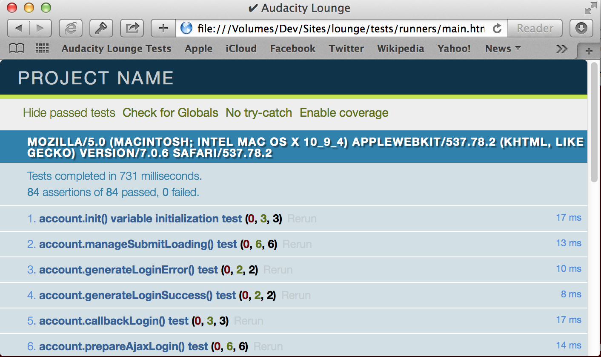

Download Test Sweets
Download Test Sweets by clicking one of the two download folders at the top of this page.
Alternatively you can go directly to the Github Repository by clicking on the link in the header.
Unzip and locate the /tests/ folder
Copy the /tests/ folder from the unzipped folder into the root folder of your project.
Get up and take a break. Walk around, pet your cat. Nice work.
Some 'splainin
Take a peek inside of the tests folder now and you should see these contents
/tests/
/config-samples/
/frameworks/
/runners/
/tests//config-samples/ contains some sample configurations that make hooking up Test Sweets into Grunt much easier.
/frameworks/ contains the libraries that power Test Sweets. Inside you will find qUnit and BlanketJS, which is used to show you how much of your application is under test.
/runners/ contains a test runner. A test runner is a .html file that loads your applications files and any tests you would like to run.
Finally, /tests/ contains the tests you will be writing for your application.
Runners
Let's crack open the /runners/ folder and open main.html in your favorite text editor. This should look familiar to you, like a friendly old .html file. However, this introduces some new topics. This is our runner. It loads your application's JS and CSS files, all of the tests of your test suite, then runs them with qUnit. While deceptively simple to use (just open the file in whatever browser you would like to test), it's pretty powerful for a puny little html page.
<!DOCTYPE html>
<head>
<meta charset="utf-8">
<meta http-equiv="X-UA-Compatible" content="IE=edge,chrome=1">
<title>Test Sweets</title>
<meta name="description" content="">
<meta name="viewport" content="width=device-width">
<!-- HEY WAKE UP, YOU NEED TO DO SOMETHING. Now that i've got your attention
fill in the second stylesheet link with your own application's css-->
<link rel="stylesheet" href="../frameworks/qunit/qunit/qunit.css">
<link rel="stylesheet" href="../../path/to/your/css.css">
</head>
<body>
<!-- The div is used by qUnit to display the results of your test.
Keep your dirty hands off this.-->
<div id="qunit"></div>
<!-- This div should be used to populate any DOM elements
you need for your test. Then contents are then magically whisked
away between tests-->
<div id="qunit-fixture"></div>
<!-- Qunit JS Testing Framework, if desired include alternative
testing frameworks here -->
<script src="../frameworks/../frameworks/qunit/qunit/qunit.js"></script>
<!-- Code Coverage library, for testing how much of your
applications is under test -->
<script src="../frameworks/blanket/dist/qunit/blanket.js"></script>
<!-- INCLUDE YOUR APPLICATIONS'S JAVASCRIPT, sorry for yelling -->
<script src="../../path/to/your/app.js" data-cover></script>
<!-- Disabling Auto Start for qUnit can help setting up
requirements for asynchronous testing -->
<!--<script>QUnit.config.autostart = false;</script>-->
<!-- Include the tests you will be writing -->
<script src="../tests/tests.js"></script>
</body>
</html>
Wow ok, that was a lot of comments. But let's review individually in our heads how chill the comments were to read.
Once everything is hooked up you should be able to manually open the test runnner in a browser and see something like this:
That is, of course, after we've written some tests
Let's now hook up Grunt.JS so we can the tests from the command line to make us feel good about ourselves.